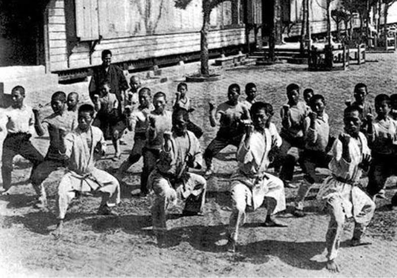

|  |
Yang belum mengetahui sejarah karate, kecuali para penganut seni bela diri yang tertarik untuk mempelajarinya. Karate telah menjadi bagian dari cabang olahraga dan diperkenalkan pertama kali di Jepang. bisa dijadikan seni (budo), olahraga, tarung, atau latihan bela diri. Namun, tidak lengkap rasanya mempelajari teknik karate tanpa mengetahui sejarahnya. Mari kita telusuri sejarah karate lebih dalam di bawah ini. |
|
Karate adalah seni bela diri yang berasal dari Jepang. Kata “karate” berasal dari penggabungan dua kata dalam bahasa Jepang: “kara” (空), yang berarti “kosong,” dan “te” (手), yang berarti “tangan.” Jadi, secara harfiah, karate dapat diartikan sebagai “seni bela diri menggunakan tangan kosong.” Karate didasarkan pada penggunaan pukulan, tendangan, elakan, dan teknik-teknik tubuh lainnya untuk melawan lawan. Selain itu, karate juga merupakan seni bela diri yang menekankan pengembangan fisik, mental, dan spiritual. Karate memiliki banyak aliran atau perguruan yang berbeda dengan gaya dan teknik yang unik. Masing-masing aliran memiliki kumpulan gerakan dan aturan yang berbeda, tetapi intinya adalah untuk melatih kedisiplinan, keseimbangan, konsentrasi, dan pengembangan karakter. Selain menjadi seni bela diri, karate juga dipraktikkan sebagai olahraga kompetitif dengan berbagai kategori pertandingan, termasuk pertarungan kumite (perkelahian) dan penampilan kata (serangkaian gerakan berurutan dengan teknik tertentu). Karate telah menyebar secara internasional dan menjadi salah satu seni bela diri yang populer di seluruh dunia. Orang yang mempraktikkan karate, dikenal sebagai karateka, terus mengembangkan keterampilan dan pengetahuan mereka untuk mencapai tingkat keahlian yang lebih tinggi dalam seni ini. |
Berikut adalah sejarah karate dalam versi yang lebih singkat:
Sejarah karate berakar pada pulau Okinawa di Jepang sekitar abad ke-6 hingga ke-19. Pada masa itu, pulau ini merupakan pusat perdagangan di wilayah Asia Timur,
yang mengakibatkan pertukaran budaya dan ilmu bela diri dari daratan Tiongkok dan wilayah sekitarnya. Salah satu faktor penting yang membentuk karate adalah larangan
penggunaan senjata di pulau Okinawa oleh penguasa Jepang pada awal abad ke-17. Sebagai alternatif, penduduk lokal mulai mengembangkan sistem
pertahanan pribadi menggunakan tangan kosong, yang kemudian berkembang menjadi teknik-teknik serangan dan pertahanan yang efektif.
|
Pada awalnya, seni bela diri di Okinawa dikenal sebagai “Okinawa-Te,” yang terdiri dari beragam aliran dan gaya bela diri lokal. Namun, pada awal abad ke-20, seorang praktisi karate terkemuka bernama Gichin Funakoshi memperkenalkan seni bela diri ini di Jepang daratan, mengubah namanya menjadi “karate” (kara berarti “kosong,” te berarti “tangan”) untuk menunjukkan pentingnya belajar tanpa senjata. Pengenalan karate di Jepang daratan memicu pertumbuhan dan perluasan seni bela diri ini ke seluruh dunia. Karate-Do, yang berarti “Jalan Karate,” juga digunakan oleh Funakoshi untuk menekankan pentingnya aspek moral, etika, dan filosofis dalam latihan karate. |
Setelah Perang Dunia II, tentara Amerika Serikat yang berada di Jepang tertarik dengan karate dan membawanya pulang ke negara mereka.
Dari sinilah karate mulai menyebar ke berbagai belahan dunia. Di bawah bimbingan master karate terkenal seperti Mas Oyama,
Jhoon Rhee, dan Hidetaka Nishiyama, popularitas karate meledak dan mulai diakui sebagai salah satu seni bela diri paling efektif.
Pada tahun 1960-an dan 1970-an, film-film kungfu yang populer dari Hong Kong dan Hollywood seperti Bruce Lee dan Chuck Norris turut berperan besar
dalam mengenalkan karate ke masyarakat luas, menciptakan tren budaya yang disebut “karate boom.”